1과목: 유통상식
1. 아래 글상자가 설명하는 중간상의 필요성에 대한 원칙으로 옳은 것은?
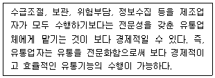
2. 최근 우리나라 유통산업의 환경변화로 가장 옳지 않은 것은?
3. 고객을 대하는 태도로 가장 옳지 않은 것은?
4. 경로시스템 내 단속형 거래(discrete transaction)와 관계형 교환(relational exchange)의 비교 설명으로 옳지 않은 것은?
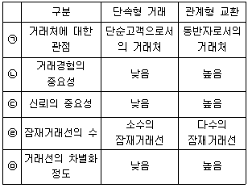
5. 소매상이 소비자에게 제공하는 기능으로 옳지 않은 것은?
6. 아래 글상자는 소비자기본법(법률 제17799호, 2020.12.29., 타법개정) 제58조 한국소비자원의 피해구제와 관련한 내용이다. 괄호 안에 들어갈 일자가 순서대로 나열된 것으로 옳은 것은?
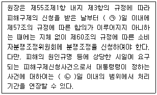
7. 귀금속이나 자동차와 같이 고가의 품목에 알맞은 유통경로로 가장 옳은 것은?
8. 마이클 포터의 가치사슬에서 나타내는 본원적 활동으로 가장 옳지 않은 것은?
9. 매장 내에서 판매원이 담당하는 일반적인 역할로 가장 옳지 않은 것은?
10. 판매원의 기본적인 자세와 관련된 설명으로 가장 옳지 않은 것은?
11. 판매원이 알아야 할 시장지식으로서 가장 옳지 않은 것은?
12. 유통의 기능에 대한 설명으로 가장 옳지 않은 것은?
13. 짧은 유통경로가 선호되는 경우만을 옳게 나열한 것은?
14. 직업과 직업윤리에 대한 설명으로 가장 옳지 않은 것은?
15. 판매자와 구매자와의 관계에서 윤리적으로 문제가 되는 판매자의 행위가 아닌 것은?
16. 아래 글상자에서 설명하는 용어로 가장 옳은 것은?
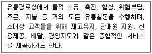
17. 유통경로의 구성원이 특별한 경험이나 전문적인 지식을 가졌을 경우에 발생하는 권력으로 가장 옳은 것은?
18. 아래의 글상자에서 설명하고 있는 소매업태의 발전이론으로 가장 옳은 것은?
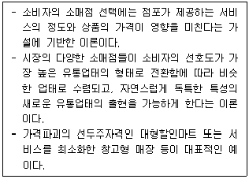
19. 국가와 지방자치단체가 행하는 양성평등정책 촉진 사항으로 가장 옳지 않은 것은?
20. 다수의 소매점이 기업으로서 독립성을 유지하면서 공동의 이익을 달성하기 위해 체인본부를 중심으로 분업과 협업의 원리에 따라 구성되는 체인 조직으로 가장 옳은 것은?
2과목: 판매 및 고객관리
21. 판매 활동에 대한 설명으로 가장 옳지 않은 것은?
22. 유통업체 브랜드(private brand)에 대한 설명으로 옳지 않은 것은?
23. 고객이 소매업체의 서비스 품질을 평가하는 다섯 가지 요소로 옳지 않은 것은?
24. 온라인 쇼핑몰과 오프라인 소매점에 공통적으로 적용할 수 있는 바람직한 설계방식으로 가장 옳지 않은 것은?
25. 고객 응대에 대한 행동으로 가장 옳지 않은 것은?
26. 소매점 재고통제의 목적으로 가장 옳지 않은 것은?
27. 아래 글상자의 내용이 설명하는 레이아웃으로 가장 옳은 것은?
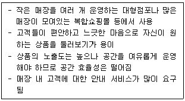
28. 광고에 대한 설명으로 가장 옳지 않은 것은?
29. 서비스 실패가 일어날 경우에 실시해야 할 서비스 회복절차와 관련된 사항으로 가장 옳지 않은 것은?
30. 편의품의 판매전략으로 가장 옳지 않은 것은?
31. 효과적인 경청 방식에 대한 설명으로 가장 옳지 않은 것은?
32. 브랜드 자산을 형성하는 두 가지 요인으로 가장 옳은 것은?
33. 서비스 실패 시 고객이 불평하지 않는 이유로 가장 옳지 않은 것은?
34. 아래 글상자는 서비스의 특성 중 무엇을 설명하고 있는가?
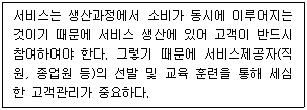
35. 구매시점광고(POP, point of purchase)에 대한 설명으로 가장 옳지 않은 것은?
36. 레이아웃에 대한 설명으로 가장 옳지 않은 것은?
37. POS(point of sales)시스템에 대한 설명으로 가장 옳지 않은 것은?
38. 아래 글상자의 괄호 안에 들어갈 용어로 옳은 것은?
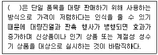
39. 비주얼 머천다이징에 관한 내용으로 가장 옳은 것은?
40. 아래 글상자의 괄호 안에 들어갈 용어로 옳은 것은?
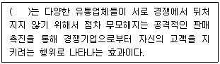
41. 구매의사가 있는 고객에게 판매원이 취해야 하는 태도로서 가장 옳지 않은 것은?
42. 아래 글상자의 ㉠과 관련한 설명으로 가장 옳지 않은 것은?
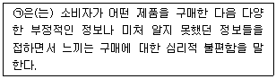
43. 제품 구성을 핵심고객가치, 실제제품, 확장제품으로 분류할 때 확장제품의 내용으로 옳은 것은?
44. 아래 글상자에서 제시하는 판매촉진 전략으로 옳은 것은?
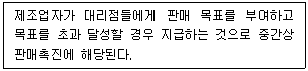
45. 소비재에 대한 설명으로 가장 옳지 않은 것은?